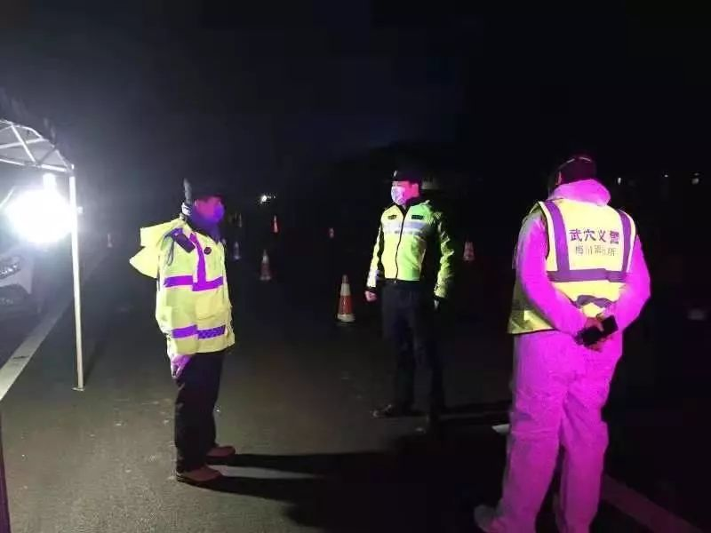
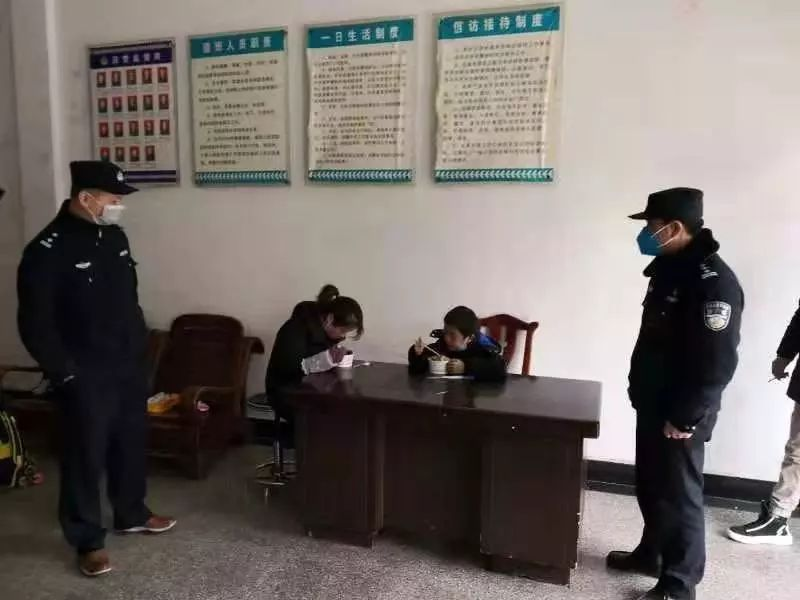

专访武汉“造谣”者之一谢琳卡医生：我的事情其实很简单，希望更多支援医护人员抗疫物资 - 经济观察网 － 专业财经新闻网站
原文链接 备份链接 经济观察网 记者 张晓晖 在武汉新冠肺炎疫情爆发初期，被武汉警方认为“造谣”而遭到警告的8位人士之一的华中科技大学同济医学院附属协和医院（下称“武汉协和医院”）肿瘤科医生谢琳卡，是最早向同事和亲友发出疫情警示的专业医生 …


作者 | 薛芳
出品｜深网·腾讯小满工作室
欢迎下载腾讯新闻APP，阅读更多优质资讯

编者按：通过湖北各城普通民众的视角和抗疫行动，记录这一段难忘的历史。是为抗疫日记系列之四，来自黄冈下属武穴市公安局的多位基层民警的真实经历，深网编辑整理。

1
武穴市公安局梅川派出所所长伍筱锋从腊月二十八到初三只回家了一次，24小时吃住在所里，哪怕家人就近在咫尺，却只能抽空视频一会。

梅川镇是湖北省武穴市下辖镇之一，原为“广济县”县政府所在地。武穴市是中国湖北省黄冈市下辖的一个县级市，位于长江中游北岸，大别山南麓，鄂东边缘，地扼吴头楚尾，历来是鄂、皖、赣毗连地段的“三省七县通衢”。
武穴市拥有长江十大深水良港之一的武穴港，同时中国最长的铁路京九铁路和中国最长的高速沪渝高速出入口，在这里交汇。
黄冈距武汉78公里，高铁最快仅需要27分钟即可抵达。黄冈病毒防疫严峻程度不下于武汉，交通的便利，给武穴带来了便利，也给人们的防疫工作带来了诸多挑战。1月29日0时-24时，湖北黄冈新增新型冠状病毒感染的肺炎病例172例，新增死亡7例。黄冈累计病例已近500例。
武穴市公安局梅川派出所是武穴市最大的派出所，距城区约四十公里，常住人口14.6万人，流动人口1万余人，全镇版图面积272平方公里，辖75村，6个社区，80余家企事业单位。梅川派出所在岗民警15人，辅警16人。
自打响抗疫战役后，仅仅在腊月二十八早晨伍筱锋回家陪父母吃了顿饭。他的家距离派出所走路仅十分钟。接下来的几天时间，他基本吃住都在派出所里。
腊月二十八这天，梅川派出所召开新型冠状病毒肺炎疫情防控紧急会，到药店购买口罩。接下来，伍筱锋和他的同事们按照上级的要求通知网吧和歌厅等单位停止营业：晚上他安排人员到高速路口设卡，查进梅川车辆是否有发热乘客。稍微有点空隙的时候，伍筱锋赶紧与家人视频一会，嘱咐家人做好新型肺炎防护。
大年三十的那一天，梅川派出所接市防控指挥部命令后，前往黄标线柳界公路，梅川与蕲春漕河交界处执行离开武穴通道暂时关闭任务。
三十晚上，伍筱锋亲自下厨给全所民辅警下了顿饺子。厨师一年没有休息了，他想给厨师放个假。
大年初一，梅川派出所做的工作就是处处添“堵”。整整一天，梅川派出所和镇长一起对全镇七个县际进出口进行了封堵，并安排人员守护。晚七点，伍筱锋饿了就在一位老乡家吃了顿面。晚上十点，梅川高速收费站封闭，25日零点境内国省道全部封闭。
大年初二，梅川派出所街面巡查，对临街店面、临时摊点劝停、街面闲逛人员劝返，伍筱锋和同事们忙完已经是晚上十点。大年初三，伍筱锋对辖区内麻将馆网吧进行清查，而后办理拒不执行紧急状态下决定案件，并对违法行为人作出处罚。
大年初四，伍筱锋上班第一件事，对辖区内需要排查有可能感染新型肺炎人员进行分配，然后到各卡口巡视，督促执勤民、辅警做好安全防护与消毒工作；晚上，排查全所民、辅警及家人是否有发热症状。
大年初五，伍筱锋上午重新安排卡点值班人员；中午11时，部署人员对辖区内宾馆住宿人员进行核查；下午到辖区观山村某麻将馆驱散聚众打麻将人员，伍筱锋很无奈，这些人不戴口罩还聚众赌博，量太大无法一一依程查处。
初六上午9时，伍筱锋用喷壶装上消毒液对所内各办公楼喷上消毒液进行消毒，统计民、辅警及家属是否有发热情况，下午一点，杭州武穴商会蔡秘书长为执勤民、辅警送来了200个N95口罩，下午3时，梅川一桶天下老板高周送水果送到梅川派出所。
伍筱锋和同事们都觉得很暖心。
2
56岁的王安贵坚持去防疫一线，他是武穴市公安局交警大队一中队指导员。王安贵老家是十堰竹溪，他已经有6个年头没有跟父母三十团聚了，在接到上级防疫安保指令后，年夜饭都未吃上一口就匆匆赶往工作地点。
今天这个大年夜的确与众不同，往年王安贵总会看到武穴的市民们手拎各种礼品相互拜年。而现如今，他走过的街头，路上基本没有行人，偶尔看到一两个人，也都是戴着口罩，步履匆匆。
王安贵是位老交通警察，也是一个老党员。他穿上了他的工作服——黑帽子，蓝制服，荧光衣服，站在了封路的卡点。
1月25日，大年初一，面对突如其来的封路，部分武穴群众还有些不理解。

1月25日22:00时起，武穴市实行交通管制：全市所有高速公路封闭，绿色通道除外。武穴市出城路口封闭，黄冈市市县（市、区）域之间国省县道封闭，国省县道省际出口路封闭，但保障应急物资和生产生活必需品的货车通行。
王安贵知道此次执行任务有风险，因为存在无症状感染者，是不是病毒携带者谁都不知道。王安贵耐心的去解释去劝说，让大家掉头回家，在家呆着不要出门，等疫情过后再出门。
高强度的工作，王安贵没时间喝水，几个小时不停的讲话加上戴上口罩的闷热导致嘴巴泛着干皮。每个值班的交警都是一天十几个小时高强度的工作，王安贵亦是。武穴春节前后一直阴雨绵绵，气温一直在零下几度，每天都是24小时轮班值守。
王安贵每天吃喝都在路上，这种辛苦如果能换来疫情不再扩散，他觉得很值得。
3
大年初四上午11时许，武穴市公安局政委朱浩汶正在龙潭派出所检查指导抗疫工作。此时，一名中年妇女带着一个小孩走进了龙潭派出所，刚一进门就瘫坐在值班大厅的椅子上，朱浩汶见状，连忙上前询问该女子相关情况。
该女子姓万，是四川人，娘家是浠水的，准备回娘家过春节，大年三十，她们母子从四川巴中坐车至江西九江下车，但因疫情到处封路没有车回家，于是她决定从九江步行至武穴后再至浠水娘家，从九江到武穴，她已经带着孩子走了两天。
由于一路上没有饭店，两人饿了就吃点随身带的饼干，困了就找个附近的加油站休息。两个人又累又饿，戴的口罩也脏了。

朱浩汶让民警给母子两准备了饭菜，还给了他们新的口罩。随后，朱浩汶又打电话进行协调，要求龙潭派出所开通绿色通道，将母子俩安全送至浠水。龙潭派出所所长陈毕明安排民警彭钧、王鸿鹄送母子二人回家。
当日下午，两位民警驱车三个小时，安全将该母子俩送至浠水兰溪高速路口，接到信息的娘家人已经在高速路口等候他们多时了。

奔波数日的小朋友看到姥爷，一下扑向姥爷的怀里嚎啕大哭。临别时，万女士连声向民警道谢。
4
大年初四，武穴市公安局交警大队事故中队民警干斌破获了一起交通肇事亡人逃逸案。
腊月二十八晚上22点，武穴市公安局交警大队事故中队接到报警，称武穴市余川镇黄标线莲花塘村下坡路段发生一起交通肇事亡人逃逸交通事故。当天晚上雨雪交加，干斌和他的同事立马赶往事故现场。
他们仔细勘察撞击痕迹，在受害人湿透的暗色裤子屁股下侧部位，发现了微量蓝色粉末，并路沿发现了细小银色塑料片。接到报案后的第二天，干斌和同事在余川派出所的协助下，深入莲花村，蚂蚁河村调查走访，了解受害人生前活动轨迹。
腊月三十，疫情严峻，黄冈市各地成立防疫指挥部，干斌和同事们没有被疫情影响。案件毫无头绪，他们在琢磨如何破案，再次赶赴余川，联系莲花村、蚂蚁河村、吴文村等村村干部查看附近地形，调取地方政府及私人监控设备。
大年初一，疫情越来越严重，干斌和同事们一大早，就赶赴黄梅黄标线沿路走访，并请求黄梅交警大队帮助，调查相关卡口信息，依然毫无头绪。
大年初二，干斌和同事们依旧没有灰心，赶赴余川，在余川派出所民警及村干部的帮助下，耐心地和不愿意与民警接触的群众沟通，最后成功锁定肇事司机蔡某，并在其家中将其抓获，但到案后的蔡某拒不交代。
初三，因未查明事故经过和查获肇事车辆去向，干斌和同事们先后赶赴余川、花桥、黄梅等地，与肇事司机蔡某的近亲属做解释工作，但没有获取有用的线索。疫情越来越严重，干斌重新梳理案件信息后，他提出走访收报废车的个体户的建议。当日下午，民警成功在黄梅大河发现了肇事车辆。经比对，肇事司机裤子蓝色粉末及银色塑料碎片与肇事车辆相吻合。在铁的证据目前，蔡某不得不交代自己交通肇事致人死亡后逃逸的犯罪事实。
疫情期间，人们闭门不出，用减少流动来对抗疫情，但总有一些人，职责使然，他们必须克服恐惧，坚守岗位。


感谢您的阅读，欢迎在文后留言并点击“在看”，留言点赞第一名且60以上，获得一个月腾讯视频会员哦~ （截止时间：下周一下午18：00）

扫码查看腾讯新闻客户端相关文章


本文版权归“腾讯新闻”所有，如需转载请在文后留言，经允许后方可转载，并在文首注明来源、作者及编辑，文末附上深网二维码。
第532期

点击“阅读原文”，查看腾讯新闻客户端相关独家文章！
你“在看”我吗？

原文链接 备份链接 经济观察网 记者 张晓晖 在武汉新冠肺炎疫情爆发初期，被武汉警方认为“造谣”而遭到警告的8位人士之一的华中科技大学同济医学院附属协和医院（下称“武汉协和医院”）肿瘤科医生谢琳卡，是最早向同事和亲友发出疫情警示的专业医生 …
原文链接 备份链接 文中图片来源：受访者提供 经济观察网 记者 高飞昌 就在很多人为返京后能不能正常入住小区或村子而发愁时，1月31日，家住浙江义乌的刘先生在微信朋友圈分享了一个手机短信截图，足以让很多人“羡慕”。 该条短信截图的文字内容 …
原文链接 备份链接 开启更有意思的武汉！请点击上方优良better →点击右上角“…” → “设为星标 ” 1月26日，湖北省人民政府新闻发布会上，武汉市长周先旺戴着口罩，疲惫地说出：“因春节因素和疫情因素，大约有500多万 …
原文链接 备份链接 我住在汉口，是这次疫情的重灾区。那个被查出疫情源头的华南海鲜市场，就在火车站对面，离我家大概20公里。我希望疫情早日结束，对我们国家的经济影响小一些，所有人都能够平安和健康。 口述 | 小 玲 整理 | 沈 林 我叫小 …
原文链接 备份链接 非常时期，武汉成了全国人民挂念、祈福的城市。封城后，武汉人民的真实生活是什么样？ 正和岛自1月26日起特别推出《叶青：我在武汉疫区的第N天》专栏。叶青是一位定居武汉40年的市民，也是一名学者和官员。接下来的一段时间，他 …